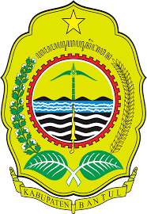

|
SISTEM INFORMASI STATISTIK
Kabupaten Bantul |
 |
| Jumlah Penduduk Kabupaten Bantul Tahun 2024 | ||
| No. | Kecamatan | Jumlah Penduduk (jiwa) |
|---|---|---|
| 1 | Srandakan | 31.179 |
| 2 | Sanden | 31.883 |
| 3 | Kretek | 30.866 |
| 4 | Pundong | 36.331 |
| 5 | Bambanglipuro | 42.153 |
| 6 | Pandak | 52.732 |
| 7 | Bantul | 66.705 |
| 8 | Jetis | 59.962 |
| 9 | Imogiri | 65.013 |
| 10 | Dlingo | 40.524 |
| 11 | Pleret | 50.191 |
| 12 | Piyungan | 54.691 |
| 13 | Banguntapan | 117.875 |
| 14 | Sewon | 103.238 |
| 15 | Kasihan | 108.779 |
| 16 | Pajangan | 38.113 |
| 17 | Sedayu | 50.034 |
| Kabupaten Bantul | 980.269 | |
| Persentase Penduduk Kabupaten Bantul Tahun 2024 | ||
| No. | Kecamatan | Persentase Penduduk (%) |
|---|---|---|
| 1 | Srandakan | 3,18 |
| 2 | Sanden | 3,25 |
| 3 | Kretek | 3,15 |
| 4 | Pundong | 3,71 |
| 5 | Bambanglipuro | 4,30 |
| 6 | Pandak | 5,38 |
| 7 | Bantul | 6,80 |
| 8 | Jetis | 6,12 |
| 9 | Imogiri | 6,63 |
| 10 | Dlingo | 4,13 |
| 11 | Pleret | 5,12 |
| 12 | Piyungan | 5,58 |
| 13 | Banguntapan | 12,02 |
| 14 | Sewon | 10,53 |
| 15 | Kasihan | 11,10 |
| 16 | Pajangan | 3,89 |
| 17 | Sedayu | 5,10 |
| Kabupaten Bantul | 100,00 | |
| Kepadatan Penduduk Kabupaten Bantul Tahun 2024 | ||
| No. | Kecamatan | Kepadatan Penduduk (jiwa/km²) |
|---|---|---|
| 1 | Srandakan | 1.684,44 |
| 2 | Sanden | 1.379,38 |
| 3 | Kretek | 1.166,07 |
| 4 | Pundong | 1.572,09 |
| 5 | Bambanglipuro | 1.825,20 |
| 6 | Pandak | 2.173,26 |
| 7 | Bantul | 3.058,74 |
| 8 | Jetis | 2.548,43 |
| 9 | Imogiri | 1.183,80 |
| 10 | Dlingo | 680,65 |
| 11 | Pleret | 2.074,01 |
| 12 | Piyungan | 1.644,40 |
| 13 | Banguntapan | 4.147,46 |
| 14 | Sewon | 3.700,02 |
| 15 | Kasihan | 3.389,39 |
| 16 | Pajangan | 1.144,91 |
| 17 | Sedayu | 1.463,41 |
| Kabupaten Bantul | 1.915,67 | |
| Rasio Jenis Kelamin Kabupaten Bantul Tahun 2024 | ||
| No. | Kecamatan | Rasio Jenis Kelamin |
|---|---|---|
| 1 | Srandakan | 99,02 |
| 2 | Sanden | 97,76 |
| 3 | Kretek | 96,62 |
| 4 | Pundong | 98,24 |
| 5 | Bambanglipuro | 98,04 |
| 6 | Pandak | 100,96 |
| 7 | Bantul | 98,62 |
| 8 | Jetis | 99,68 |
| 9 | Imogiri | 98,57 |
| 10 | Dlingo | 98,57 |
| 11 | Pleret | 101,59 |
| 12 | Piyungan | 98,96 |
| 13 | Banguntapan | 98,70 |
| 14 | Sewon | 100,11 |
| 15 | Kasihan | 99,33 |
| 16 | Pajangan | 100,46 |
| 17 | Sedayu | 99,17 |
| Kabupaten Bantul | 99,20 | |